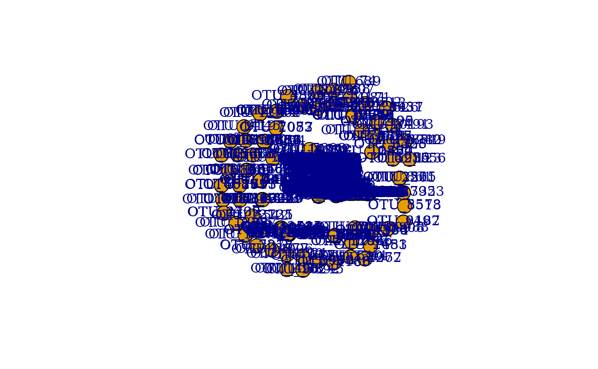

Integrated Analysis of Microbial Community Assembly with MbioAssy 2.0
Ling Yuan, Ze Zhao, Feng Ju
2025-12-15
MbioAssy_vignette.RmdIntroduction
MbioAssy provides an integrated pipeline for assessing ecological stochasticity and determinism in microbial community assembly. This vignette demonstrates how to use the package to perform:
- Normalized Stochasticity Ratio (NST) analysis
- Neutral Model analysis
- iCAMP (infer Community Assembly Mechanisms by Phylogenetic-bin-based null model) analysis
- C-score variance analysis
- Co-occurrence Network construction and topology analysis
Loading Data
The package includes example data in the inst/extdata
directory. We first load the necessary data tables.
library(MbioAssy2)
# Let's assume we are running this where we can access the files.
data_dir <- system.file("extdata", package = "MbioAssy2")
# Load OTU table
otu_file <- file.path(data_dir, "OTU.txt")
otu_table <- t(read.table(otu_file, sep = " ", header = TRUE, row.names = 1)) # Samples x OTUs
# Filter
otu_table <- as.matrix(otu_table)
otu_table <- otu_table[which(rowSums(otu_table) > 0), ]
otu_table <- otu_table[, which(colSums(otu_table) > 0)]
# Load Group table
group_file <- file.path(data_dir, "Group.txt")
group_table <- read.table(group_file, sep = " ", header = TRUE, row.names = 1)
# Load Tree
tree_file <- file.path(data_dir, "Tree.nwk")
if (requireNamespace("ape", quietly = TRUE)) {
tree <- ape::read.tree(tree_file)
}
# Load Env
env_file <- file.path(data_dir, "Env.txt")
env_table <- read.table(env_file, sep = " ", header = TRUE, row.names = 1)
# Load Taxonomy
tax_file <- file.path(data_dir, "Taxonomy.txt")
tax_table <- read.table(tax_file, sep = " ", header = TRUE, row.names = 1)1. Normalized Stochasticity Ratio (NST) Analysis
NST quantifies stochasticity in community assembly. NST > 0.5 indicates stochasticity dominance; NST < 0.5 indicates determinism dominance.
# Run NST (rand=20 for speed in vignette, normally 1000)
nst_res <- run_nst(
comm = otu_table,
group = group_table,
rand = 20,
output_file = NULL
)
#> All match very well.
#> Now randomizing by parallel computing. Begin at Mon Dec 15 17:53:50 2025. Please wait...
head(nst_res)
#> group size ST.i.ruzicka NST.i.ruzicka MST.i.ruzicka
#> 1 Non-saline soil 435 0.7610271 0.4062123 0.3729465
#> 2 Saline soil 1770 0.8274543 0.4843195 0.44593062. Neutral Model Analysis
This module fits the Sloan neutral community model.
# Fit neutral model
nm_out <- fit_sncm(spp = otu_table)
#> Waiting for profiling to be done...
# Plot results
p <- plot_sncm_fit(nm_out, title = "Neutral Model Fit")
print(p)
# Inspect fit statistics
print(nm_out$fitstats)
#> m m.ci poisLL Rsqr Rsqr.pois RMSE RMSE.pois
#> 1 0.2096662 0.01067895 -1133.184 0.6689915 0.02138333 0.1513549 0.2602456
#> AIC.pois BIC.pois N Samples Richness Detect
#> 1 -2262.368 -2250.356 9782.911 90 3000 0.00010221913. iCAMP Analysis
iCAMP quantifies relative importance of ecological processes (Selection, Dispersal, Drift) at the bin level.
# Create a temporary directory for outputs
icamp_out_dir <- tempfile()
dir.create(icamp_out_dir)
# Run iCAMP (parameters reduced for speed)
icamp_res <- run_icamp(
comm = otu_table,
tree = tree,
treat = group_table,
env = env_table,
clas = tax_table,
prefix = "VignetteTest",
save_dir = icamp_out_dir,
rand = 20, # 1000 recommended
nworker = 2, # Adjust based on CPU
bin_size_limit = 12 # Small for test data
)
#> [1] "9.582236 mins"
# View process importance for each group
print(icamp_res$icbin$Pt)
#> Method GroupBasedOn Group HeS
#> 1 CbMPDiCbraya Saline Non-saline soil 0.0123098029312797
#> 2 CbMPDiCbraya Saline Saline soil 0.014165570010395
#> 3 CbMPDiCbraya Saline Non-saline soil_vs_Saline soil 0.0206792474744961
#> HoS DL HD DR
#> 1 0.283503111381944 0.497525614644261 0.058154511964781 0.148506959077734
#> 2 0.264772543226473 0.425054980449691 0.0855917551317241 0.210415151181717
#> 3 0.24006506028654 0.515761262146708 0.0481255058329052 0.175368924259354. C-score Variance Analysis
C-score variance assesses co-occurrence patterns (aggregation vs. segregation).
# Run C-score analysis (nReps reduced for speed)
cscore_model <- run_cscore_var(
comm = otu_table,
nReps = 100,
save_plot = FALSE,
output_file = NULL
)
#> Burn-in Progress
#> | | | 0% | |= | 1% | |= | 2% | |== | 3% | |=== | 4% | |==== | 5% | |==== | 6% | |===== | 7% | |====== | 8% | |====== | 9% | |======= | 10% | |======== | 11% | |======== | 12% | |========= | 13% | |========== | 14% | |========== | 15% | |=========== | 16% | |============ | 17% | |============= | 18% | |============= | 19% | |============== | 20% | |=============== | 21% | |=============== | 22% | |================ | 23% | |================= | 24% | |================== | 25% | |================== | 26% | |=================== | 27% | |==================== | 28% | |==================== | 29% | |===================== | 30% | |====================== | 31% | |====================== | 32% | |======================= | 33% | |======================== | 34% | |======================== | 35% | |========================= | 36% | |========================== | 37% | |=========================== | 38% | |=========================== | 39% | |============================ | 40% | |============================= | 41% | |============================= | 42% | |============================== | 43% | |=============================== | 44% | |================================ | 45% | |================================ | 46% | |================================= | 47% | |================================== | 48% | |================================== | 49% | |=================================== | 50% | |==================================== | 51% | |==================================== | 52% | |===================================== | 53% | |====================================== | 54% | |====================================== | 55% | |======================================= | 56% | |======================================== | 57% | |========================================= | 58% | |========================================= | 59% | |========================================== | 60% | |=========================================== | 61% | |=========================================== | 62% | |============================================ | 63% | |============================================= | 64% | |============================================== | 65% | |============================================== | 66% | |=============================================== | 67% | |================================================ | 68% | |================================================ | 69% | |================================================= | 70% | |================================================== | 71% | |================================================== | 72% | |=================================================== | 73% | |==================================================== | 74% | |==================================================== | 75% | |===================================================== | 76% | |====================================================== | 77% | |======================================================= | 78% | |======================================================= | 79% | |======================================================== | 80% | |========================================================= | 81% | |========================================================= | 82% | |========================================================== | 83% | |=========================================================== | 84% | |============================================================ | 85% | |============================================================ | 86% | |============================================================= | 87% | |============================================================== | 88% | |============================================================== | 89% | |=============================================================== | 90% | |================================================================ | 91% | |================================================================ | 92% | |================================================================= | 93% | |================================================================== | 94% | |================================================================== | 95% | |=================================================================== | 96% | |==================================================================== | 97% | |===================================================================== | 98% | |===================================================================== | 99% | |======================================================================| 100%
#> Swap Progress
#> | | | 0% | |= | 1% | |= | 2% | |== | 3% | |=== | 4% | |==== | 5% | |==== | 6% | |===== | 7% | |====== | 8% | |====== | 9% | |======= | 10% | |======== | 11% | |======== | 12% | |========= | 13% | |========== | 14% | |========== | 15% | |=========== | 16% | |============ | 17% | |============= | 18% | |============= | 19% | |============== | 20% | |=============== | 21% | |=============== | 22% | |================ | 23% | |================= | 24% | |================== | 25% | |================== | 26% | |=================== | 27% | |==================== | 28% | |==================== | 29% | |===================== | 30% | |====================== | 31% | |====================== | 32% | |======================= | 33% | |======================== | 34% | |======================== | 35% | |========================= | 36% | |========================== | 37% | |=========================== | 38% | |=========================== | 39% | |============================ | 40% | |============================= | 41% | |============================= | 42% | |============================== | 43% | |=============================== | 44% | |================================ | 45% | |================================ | 46% | |================================= | 47% | |================================== | 48% | |================================== | 49% | |=================================== | 50% | |==================================== | 51% | |==================================== | 52% | |===================================== | 53% | |====================================== | 54% | |====================================== | 55% | |======================================= | 56% | |======================================== | 57% | |========================================= | 58% | |========================================= | 59% | |========================================== | 60% | |=========================================== | 61% | |=========================================== | 62% | |============================================ | 63% | |============================================= | 64% | |============================================== | 65% | |============================================== | 66% | |=============================================== | 67% | |================================================ | 68% | |================================================ | 69% | |================================================= | 70% | |================================================== | 71% | |================================================== | 72% | |=================================================== | 73% | |==================================================== | 74% | |==================================================== | 75% | |===================================================== | 76% | |====================================================== | 77% | |======================================================= | 78% | |======================================================= | 79% | |======================================================== | 80% | |========================================================= | 81% | |========================================================= | 82% | |========================================================== | 83% | |=========================================================== | 84% | |============================================================ | 85% | |============================================================ | 86% | |============================================================= | 87% | |============================================================== | 88% | |============================================================== | 89% | |=============================================================== | 90% | |================================================================ | 91% | |================================================================ | 92% | |================================================================= | 93% | |================================================================== | 94% | |================================================================== | 95% | |=================================================================== | 96% | |==================================================================== | 97% | |===================================================================== | 98% | |===================================================================== | 99% | |======================================================================| 100%
summary(cscore_model)
#> Time Stamp: Mon Dec 15 18:06:23 2025
#> Reproducible:
#> Number of Replications:
#> Elapsed Time: 2.3 mins
#> Metric: c_score_var
#> Algorithm: sim9
#> Observed Index: 26174
#> Mean Of Simulated Index: 25257
#> Variance Of Simulated Index: 839.67
#> Lower 95% (1-tail): 25209
#> Upper 95% (1-tail): 25309
#> Lower 95% (2-tail): 25208
#> Upper 95% (2-tail): 25310
#> Lower-tail P > 0.99
#> Upper-tail P < 0.01
#> Observed metric > 100 simulated metrics
#> Observed metric < 0 simulated metrics
#> Observed metric = 0 simulated metrics
#> Standardized Effect Size (SES): 31.6395. Co-occurrence Network Analysis
Constructs and analyzes microbial interaction networks.
# Construct network
# For demonstration, we use a simple Spearman correlation without RMT
net_res <- construct_network(
comm = otu_table,
cor_cutoff = 0.6,
p_cutoff = 0.05,
use_rmt = FALSE
)
# Calculate topology
topo_res <- calculate_topology(net_res$graph)
# plot network
plot(net_res$graph)
# Global topology
print(topo_res$global)
#> e v cc spl md gd nd ad
#> 1 4327 1007 0.3589672 3.170335 0.6309238 0.008542588 15 8.593843
# Top 5 nodes by degree
head(topo_res$node[order(topo_res$node$node.degree, decreasing = TRUE), ])
#> node.degree betweenness.centrality closeness.centrality
#> OTU_52 87 29394.223 0.0003423485
#> OTU_19 72 7612.059 0.0003060912
#> OTU_55 71 21715.277 0.0003332223
#> OTU_137 67 7162.284 0.0002935134
#> OTU_150 66 9532.687 0.0003327787
#> OTU_106 64 5577.901 0.0002928258
#> node.transitivity
#> OTU_52 0.2173216
#> OTU_19 0.2879499
#> OTU_55 0.2406439
#> OTU_137 0.2786070
#> OTU_150 0.2442890
#> OTU_106 0.29017866. Random Network Generation
Generates random networks to compare with the empirical network.
# Generate 10 random networks with same nodes and edges as empirical network
n_nodes <- topo_res$global$v
n_edges <- topo_res$global$e
rand_net_stats <- generate_random_networks(n = n_nodes, e = n_edges, reps = 10)
head(rand_net_stats)
#> n e cc spl md gd nd ad
#> 1 1007 4327 0.009153196 3.458105 0.2490601 0.008542588 6 8.593843
#> 2 1007 4327 0.008691453 3.453841 0.2564205 0.008542588 6 8.593843
#> 3 1007 4327 0.009366092 3.458490 0.2571868 0.008542588 6 8.593843
#> 4 1007 4327 0.009021587 3.457938 0.2578211 0.008542588 6 8.593843
#> 5 1007 4327 0.009301331 3.457529 0.2560048 0.008542588 7 8.593843
#> 6 1007 4327 0.007913224 3.454889 0.2501405 0.008542588 6 8.593843